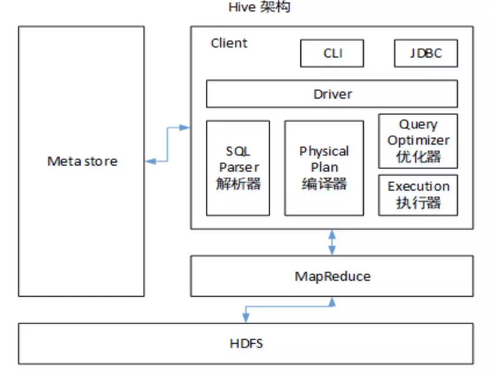

1.hive关联数据倾斜：
原因：
- key分布不均匀；
- 业务本身的特性；
- 建表时考虑不周；
- 某些SQL语句本身就有数据倾斜；
解决办法：
- set hive.groupby.skewindata=true;
- 小表大表join，reduce join=>map join;
- 大表大表join,key 前缀加随机数字；
- 知乎hive数据倾斜解决方案；
- 拓展：spark 数据倾斜美团处理方案；
- 拓展：spark调优优化；
2.hive架构：

3.四个by 的区别：
- Sort by :在数据进入reducer前完成排序,当mapred.reduce.tasks>1时，只能保证每个reducer的输出有序，不保证全局有序；
- Order by:全局排序,对输入的数据做排序，故此只有一个reducer(多个reducer无法保证全局有序),只有一个reducer，会导致当输入规模较大时，需要较长的计算时间；
- Distribute by:按照指定的字段对数据进行划分输出到不同的reduce中，常和sort by一起使用，并且distribute by必须在sort by前面；
- Cluster by:相当于distribute by+sort by，只能默认升序，不能使用倒序；
4.常用函数：
(1)行转列函数
- concat：连接各个字段，eg:concat( aa, ‘:’, bb)，只要其中一个是NULL，那么将返回NULL;
- concat_ws：使用分隔符连接字段，分隔符尾第一个参数，eg:concat_ws(‘-‘,’a’,’b’)，只要有一个字符串不是NULL，就不会返回NULL;
- collect_set(col)：函数只接受基本数据类型，它的主要作用是将某字段的值进行去重汇总，产生array类型字段;
(2) 列转行函数
- explode(col)：将hive某列中复杂的array或者map结构拆分成多行;
- lateral view：常和UDTF函数一起使用;
- 解释：用于和split, explode等UDTF一起使用，它能够将一列数据拆成多行数据，在此基础上可以对拆分后的数据进行聚合;
- eg:SELECT username, role FROM ods.ods_actor_data LATERAL VIEW explode(split(userrole, ‘,’)) tmpTable AS role;
5.Rank排名函数：
- rank() : 排序相同时会重复，总数不会变；
- dense_rank() : 排序相同时会重复，总数会减少;
- row_number() : 排序相同时不会重复，根据排序计算排名;
在实际开发中，以上三个rank函数通常是和开窗函数一起使用的。
6.窗口函数（开窗函数）
- over() :用于指定分析函数工作时的数据窗口大小，这个数据窗口大小可能会随着行的变而变化；
- current row :当前行；
- n PRECEDING :往前n行数据；
- n FOLLOWING: 往后n行数据；
- UNBOUNDED：起点，UNBOUNDED PRECEDING 表示从前面的起点， UNBOUNDED FOLLOWING表示到后面的终点；
- LAG(col,n,default_val)：往前第n行数据；
- LEAD(col,n, default_val)：往后第n行数据；
- NTILE(n)：把有序分区中的行分发到指定数据的组中，各个组有编号，编号从1开始，对于每一行，NTILE返回此行所属的组的编号。这个函数需要注意：n必须为int类型。
7.UDF、UDAF、UDTF的区别？
- UDF：User-Defined-Function，用户自定义函数，数据是一进一出，功能类似于大多数数学函数或者字符串处理函数；
- UDAF：User-Defined Aggregation Function，用户自定义聚合函数，数据是多进一出，功能类似于 count/max/min；
- UDTF：User-Defined Table-Generating Functions，用户自定义表生成函数，数据是一进多处，功能类似于lateral view explore()；
8.怎么自定义UDF、UDAF、UDTF函数？
9.hive优化相关面试题
- MapJoin：如果不指定 MapJoin 或者不符合 MapJoin 的条件，那么 Hive 解析器会将 Join 操作转换 成 Common Join，即：在 Reduce 阶段完成 join容易发生数据倾斜,可以用MapJoin把小 表全部加载到内存在 map 端进行 join，避免 reducer 处理;
- 行列过滤：列处理：在 SELECT 中，只拿需要的列，如果有，尽量使用分区过滤，少用 SELECT *;
- 行处理：在分区剪裁中，当使用外关联时，如果将副表的过滤条件写在 Where 后面，那 么就会先全表关联，之后再过滤;
- 使用分桶;
- 知乎hive调优;